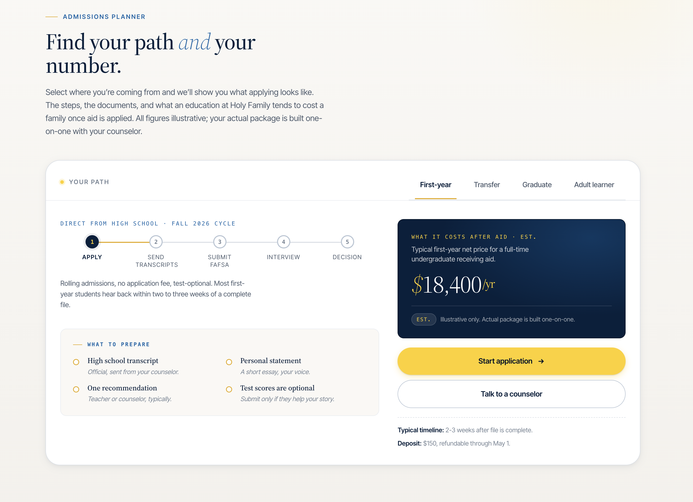
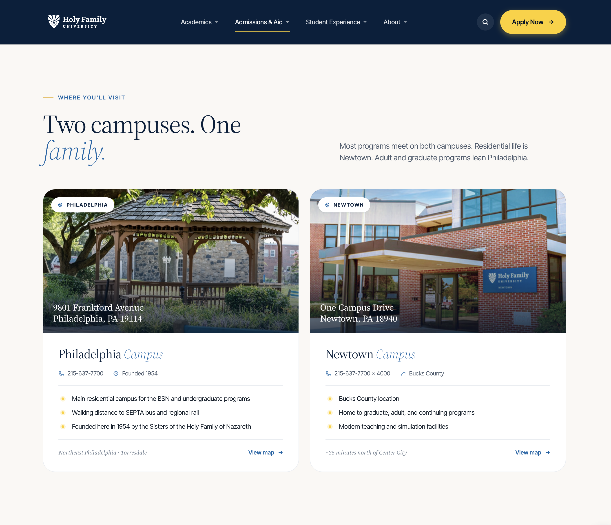
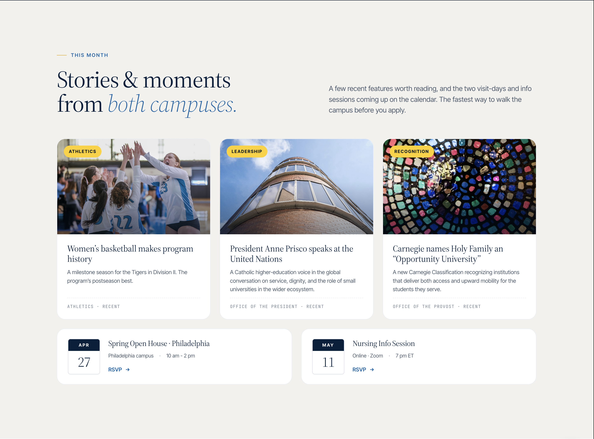
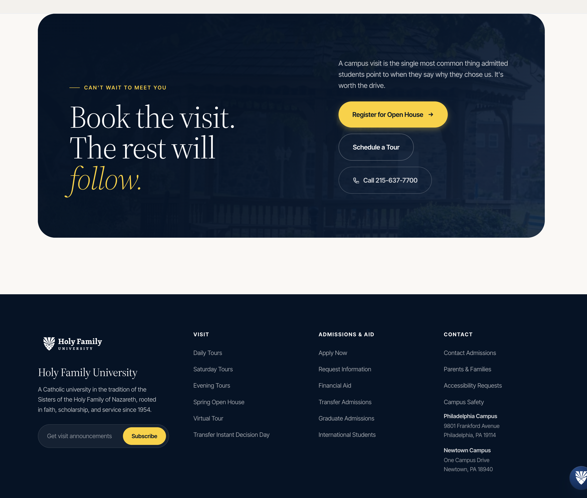
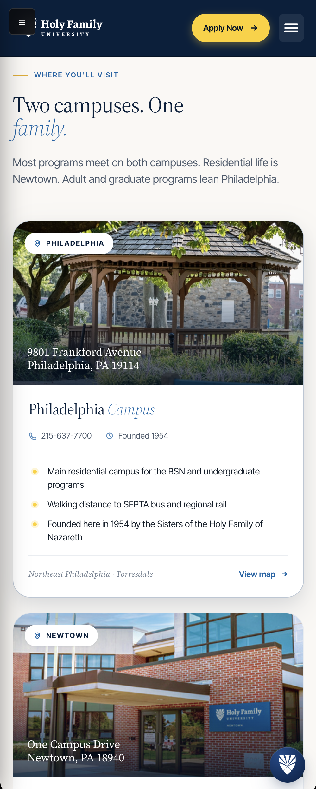

Kickoff → Launch
Jun → Sep '26
Three months to build. Ninety days of stabilization through November. Live for the Fall 2026 recruitment cycle, one cycle earlier than the RFP’s outer timeline implies.
Measured by the students it enrolls, not the pages it publishes. A proposal from Small College Consulting, prepared for Holy Family University. Submitted April 17, 2026.

Small College Consulting is honored to present this proposal to Holy Family University. In partnership with your internal team, our approach will strengthen the institution's website and its connected marketing channels. It will also position University personnel to manage and evolve the site in the years ahead with little external vendor support, and in most cases none.
Members of the Small College Consulting team already hold working relationships with members of the University's leadership. We are eager to deepen them and to extend the scope of our work together. What follows is a combination of extensive research applied to a comprehensive strategy and a potentially large headstart on some of the deliverables in terms of strategy and execution associated with every requirement the RFP sets out.
For best results and to provide Holy Family with a true demonstration of what our collaborative partnership would look like and include, please reference the complete proposal with interactive, web-based components at hfu-web-proposal.vercel.app.
This proposal is organized as requested into Sections A through G, each addressed in the pages that follow. In preparation for this engagement, Small College Consulting has developed proprietary technology that supports seamless redesign and content migration from the existing Drupal installation into WordPress, while simultaneously optimizing the new site for AI-engine visibility and enhanced prospective student engagement to support enrollment. It has been built, tested, and validated against real institutional content.
Every decision in this proposal answers one question: how does the redesign help Holy Family enroll more students? Not a modern website for its own sake, but a website that measurably moves inquiries, applications, and confirmed enrollments.
Three months to build. Ninety days of stabilization through November. Live for the Fall 2026 recruitment cycle, one cycle earlier than the RFP’s outer timeline implies.
All-in base scope. Slate integration included. Optional add-ons priced separately per RFP §E. Soft-exit at any approval gate with full IP retained.
James Vineburgh’s AI admissions concierge — already generating inquiries on Holy Family’s current admissions pages. An updated version ships with the base scope as a value-add.
Who we are, who's on the engagement, the higher-ed work we've delivered, and the references who will speak to it.
We approach website redesign as a mission-critical enrollment strategy. Every design decision, content structure, and user pathway is evaluated through one lens: inquiry generation, application starts, and enrollment. Our team brings senior-level experience managing enrollment funnels across institutions facing enrollment volatility, resource constraints, and complex stakeholder environments. The six artifacts below are drafted inside this response so the committee does not have to take our competence on faith.
Eight top-level sections. Collapses 180+ URL prefixes into roughly 650–1,000 canonical pages.
The homepage, the School of Nursing flagship, and the Student Experience page, drafted rather than wireframed.
EducationalOrganization, Course, Person, Event, and FAQ schemas, written against real institutional data.
GA4 events, GTM data layer, Slate cross-domain tracking, a Looker Studio layout for Katherine's team.
All 1,601 pages matched to their new homes by AI, with a person reviewing anything uncertain.
Manual review of the University's top twenty pages, with real findings that are fixable on Drupal before migration.
CMS recommendation with rationale, architecture, hosting & environment workflow, WCAG 2.2 AA compliance, and integration capabilities for the Holy Family redesign.
We pulled every URL on holyfamily.edu and ran it through the audit pipeline. The picture below frames the rebuild: a Drupal 7 install from circa 2018, 1,601 pages of content, no structured-data layer, and a design language that predates the adult-learner pivot named in §4.
Nothing on the current site gets lost. Every old page points to its new location, with AI proposing the match and a person confirming anything that isn't an obvious fit.

Three brand pages rendered in this response: the homepage (Variant A · undergraduate hero), the School of Nursing flagship, and the Student Experience page. Each ships with the component library, typography, and color system that will run the rest of the site.


Seven working drafts. Each opens the full-page mockup in a new window — scrollable, responsive, annotated.
/mockups/hfu-home.html
/mockups/hfu-bsn.html
/mockups/hfu-programs.html
/mockups/hfu-admissions.html
/mockups/hfu-student-life.html
/mockups/hfu-about.html
/mockups/hfu-visit.html
/mockups-portal.html
A first-pass sitemap for holyfamily.edu. Bar length represents projected page count per section. Validated via card sort & tree test during Discovery.
Discovery opens with stakeholder interviews across admissions, marketing, IT, academic affairs, and student life. User research follows: task analysis with real prospective students, competitive audit of the Philadelphia Catholic peer set, and a content-strategy inventory that maps every page to the audience it serves.
Structured conversations with each stakeholder group. Competing priorities are surfaced early and reconciled before wireframes, not after. Output: a requirements matrix the Cabinet can sign.
Card sorts, tree tests, and click-path analysis against the top-ten enrollment tasks. Results feed directly into the sitemap and primary navigation — the IA is validated, not argued.
La Salle, Villanova, Neumann, and two non-Catholic comparators. Design language, form UX, mobile performance, and AI visibility all scored on a shared rubric, with visual diffs attached.
A content audit produces a disposition for every URL: keep, consolidate, rewrite, archive, or redirect. Pages that serve no enrollment or retention goal are retired with traffic preserved.
Nielsen-grounded heuristic walkthrough of the top twenty pages today. Each issue logged with severity, likely conversion impact, and fix pathway. No generic audits; everything is actionable.
Friday status email plus Monday standup. Change requests documented, scoped, and approved before any work begins. Disagreements are resolved with analytics, user research, or peer benchmarks — not opinion.
Holy Family's internal development team receives shared GitHub access at kickoff. Every PR is dual-reviewed. Knowledge transfer runs continuously through the engagement, not as a day-90 dump. Four phases, one pipeline, no surprises.
Every feature opens its own branch and its own Pantheon Multidev environment. No direct-to-production pushes, ever.
PHP_CodeSniffer, ESLint, axe-core, and Lighthouse all run in CI. A violation is a build-blocker. SCC and HFU each approve.
QA runs on Test. Promotion to Live only after gate approval. Rollback to any prior state available in under 60 seconds.
Linear tasks, Loom walkthroughs, and written runbooks accrue as the code ships. Handoff on day 90 is ceremonial, not surgical.
Rick Mitchell's team has write access from week one. Branch protection enforced. Code review flows both ways — SCC on HFU PRs, HFU on SCC PRs. Slack + Linear for async; Loom for walkthroughs.
Semantic embedding matching maps old URLs to new IA. AI drafts the rewrite; editors approve. The 301-redirect CSV generates automatically. Every migrated page lands with SEO and AEO already baked in.
Scope creep: change-control at every gate. Key-person loss: all four principals cross-documented. Timeline slip: two-week buffer built into G4. Integration failure: Slate sandbox live from week one.
Design: Rick Mitchell signs off. Content: Marketing owns, editors approve. Code: dual review (SCC + HFU). Escalation: PM → Scott in <24 hours. Decision authority documented before kickoff.
What makes us a fit for Holy Family specifically: peer landscape context, cultural & mission alignment, and the questions we would surface during Discovery.
A scan of four Philadelphia-area Catholic peers. Two recent refreshes (La Salle, Neumann) and one full rebuild (Villanova) frame where the bar has moved on small-college web presence. Holy Family’s current site is the one most overdue for a refresh.


The philosophy, discovery cadence, IA and design process, development rhythm, content migration, stakeholder engagement, collaborative workflow, and risk posture that runs this engagement.
Each of the six below ships on day one of a signed engagement. None is an add-on. None is priced separately. 93% of graduates are employed within six months; 40% study Nursing or Health Sciences — the redesign surfaces those numbers where applicants decide.
llms.txt at root. JSON-LD on every content type. Canonical fact sources for tuition, deadlines, outcomes.
From copy to IA to hero image. Variant B in base scope, written for a 34-year-old Nursing applicant on her phone.
Traditional WordPress, not headless. The right call for a two-person internal team to run for five years.
Content audit, governance, IA analysis become Discovery's starting position. Phase 1 closes two weeks early.
At any approval gate, terminate with full IP, completed work, and a prorated refund. No retainer trap.
1,601 URLs to 650–1,000 via semantic embedding matching. AI drafts, humans decide, tests verify.
RFP §4 names adult and graduate as the top growth priority. These applicants browse from phones, in the evening, after work. They need cost and schedule above the fold. The four moves below ship in base scope.
No "request info to see pricing", no gated PDFs. Total cost, per-credit cost, part-time completion time, and employment outcomes render before any scroll.
A single Gravity Form with program routing, conditional questions, and real-time delivery to Slate via webhook. Inquiries land in the right queue without manual triage.
"Finish what you started. On your schedule." Credit for prior learning, time-to-degree, and cost up front. Served conditionally by UTM parameter and returning-visitor behavior.
Four-stage GA4 funnel, Slate Ping tracking site-wide, cross-domain attribution into the application portal, and a Looker Studio dashboard for the enrollment team's weekly review.
Dr. James Vineburgh, a member of our team co-leading the redesign, developed the AI chatbot currently live on Holy Family's admissions pages. It has generated 2,200+ inquiries grounded in the University's own content, with no campaign spend. An updated version of that chatbot is included in this proposal as a value add.

RFP §6 names personalization, AI-powered site search, language translation, and enrollment analytics as the technical capabilities the new site must deliver. Each is answered below — with the approach, the scope in base, and the evidence it's real.
WordPress + ACF Pro on Pantheon, with Slate integration, Gravity Forms routing, and a CI pipeline that runs WCAG regression on every deploy. The six choices below are the ones we’ll defend in Discovery.
ACF Pro provides component-level fields so marketing staff edit in the browser, not the template. Zero developer tickets for 90% of content changes.
Conditional fields + Slate webhook routing means an RFI lands in the right enrollment queue in real time, no manual triage.
Multidev branches for every feature. Automated daily backups. CDN + edge caching. Autopilot updates on the WordPress core.
Slate Ping pixel site-wide, cross-domain tracking into the application portal, and a weekly Looker Studio dashboard for Katherine’s team.
axe-core runs on every PR. Manual review of top-20 templates before launch. 100% of new pages pass AA at merge time.
WAF rules via Pantheon, FERPA-safe analytics configuration, and a published incident-response playbook before day 90. Pen-test optional, priced in §E.
A meaningful share of prospective students already research universities through ChatGPT, Claude, and Perplexity. The file below, drafted in this proposal against real HFU data, ensures the answer surfaces your 93% employment outcome, not generic copy.
Every fact in the file is drawn from holyfamily.edu, reviewed by your team, and kept in sync by a weekly webhook. When an AI engine cites Holy Family, it cites your words.
The schema pack ships on the same day. EducationalOrganization, CollegeOrUniversity, Course, Person, Event, and FAQPage are all JSON-LD, server-rendered, reachable without JavaScript.
# Holy Family University # A Catholic university in Philadelphia · founded 1954 Name: Holy Family University Type: Private Catholic university Founded: 1954 Founder: Sisters of the Holy Family of Nazareth Campuses: Philadelphia, Newtown PA ## Key facts (canonical) Enrollment: 3,700 # students Employed-in-6-months: 93% # of graduates Nursing/Health-Sciences: 40% # of students NCLEX-first-time-pass: 91.38% # BSN 2023 Student-faculty: 13:1 ## Primary sources /about/mission/ # mission statement /academics/programs/ # 40+ programs /admissions/cost/ # tuition & aid /nursing/bsn/ # Nursing flagship ## Refreshed weekly from source Last-updated: 2026-06-14T00:00:00Z
Pantheon Gold provides the three-environment workflow, edge CDN, automated backups, and managed WordPress core updates that a two-person internal team can run for five years without a dedicated DevOps hire. Performance, redundancy, and developer experience, all in one platform.
Every feature spawns its own branch and its own environment. QA happens on Test. Promotion to Live only after gate approval. No direct-to-production pushes, no shared sandboxes, no surprises.
Pantheon's Fastly-backed CDN serves cached pages from the edge. Lighthouse performance budget enforced at merge. Core Web Vitals tracked weekly. Object caching via Redis keeps dynamic pages fast, too.
Gold tier auto-scales horizontally during enrollment spikes, open-house traffic, and campaign launches. Multi-region redundancy; no capacity-planning tickets required. We’ve run three prior builds on Pantheon — Truman, Ponce Health Sciences, and one commercial client.
Accessibility is not a pre-launch audit. It is a build-time constraint enforced on every pull request from G2 onward. By launch, 100% of new templates pass WCAG 2.2 AA at merge time. No exceptions ship. A signed VPAT accompanies delivery.
Automated accessibility testing runs in CI on every pull request. Any violation is a build-blocker. Regressions are caught before code review, not after launch.
Automated tools catch roughly 57% of WCAG issues. Manual review with screen readers (VoiceOver, NVDA) and keyboard-only navigation catches the rest. Scheduled into stewardship.
Color tokens, focus states, and touch-target minimums baked into the component library. Designers cannot compose inaccessible layouts from the system's primitives.
Native HTML elements before ARIA roles. Skip links, landmark regions, and heading hierarchy are validated at the template level, not bolted on later. Keyboard-navigable by default.
A signed VPAT accompanies launch. Internal accessibility playbook for the marketing team covers alt text, link text, heading structure, and accessible PDF generation — everything an editor touches.
Two training sessions during the 90-day stewardship. Covers alt text, heading hierarchy, link text, color contrast on user-uploaded images, and the editor's half of the accessibility contract.
HFU's founding charism — the education of the whole person in mind, body, spirit, and community — is worth more than a paragraph on /about. We propose to let it organize the information architecture itself. Here's where each pillar shows up on the site.
Program pages open with academic outcomes — 93% employment, grad-school placement — plus a formation frame that names what the degree asks of the student as a thinking person. Faculty profiles include a scholarship-and-faith module. The Catholic intellectual tradition, presented as competitive advantage.
Student-life pages lead with counseling, wellness, and athletics as co-equal with academics — not as a lifestyle upsell. Campus tours surface dorms, dining, chapel, and gym as one integrated place of formation, not a set of amenities.
Chaplaincy promoted from a buried link to a first-class citizen, with Mass times, retreats, and spiritual-direction bookings, all schema-marked. A service-and-mission module on the homepage carries live immersion-trip counts — shown, not disclaimed.
Alumni pages show mentor-relationship counts and giving patterns, not just career paths. The homepage impact module pulls live data from local partners: hospitals, parishes, and schools that the community serves in Northeast Philly.

Your Catholic identity is an enrollment argument, not a disclaimer.
Most redesigns treat mission as branding: a logo lockup, a values page, a photo of the chapel. We’d like to treat it as an enrollment argument. The prospects who share Holy Family’s mission are also its most yield-dense applicants — and today, four of the five Philadelphia Catholic peers surface mission only on a values tab. The redesign’s job is to help mission-aligned prospects recognize themselves in the decision moment and choose to enroll.
Sources · HERI 2024 Catholic HE survey · HFU alumni retention 2024 · Peer landscape April 2026 · Sisters of the Holy Family of Nazareth, NE Philadelphia.
Five gates from June kickoff to September 1 launch, project management cadence, change control, and QA process through the whole lifecycle.
A three-month build broken into five approval gates. At each gate, the work-to-date ships to the University’s team for review and sign-off, with an optional soft-exit clause: stop at any gate with full IP retained and no further invoicing.
The client portal at holy-family-internal.vercel.app is already built. Commenting, task management, and a direct line from every team member to engineering. Everything stays central. No work happens outside the system — no email chains to untangle.
Already live. Proposal, research, and mockups in one place. Commenting plus task management. Connects every team member directly to engineering. No email chains.
A written impact assessment — timeline and budget — precedes approval. Changes are processed at gate boundaries, not mid-sprint. No surprise invoices. Every change traced to an RFP section or a recorded decision.
Functional (does it work). Cross-browser (Chrome, Safari, Firefox, Edge, plus mobile). Accessibility (axe-core plus manual). Performance (Lighthouse budget). All four pass before promotion.
No substitution after contract signing. Full bios and references live in the Appendix; the summary below is the working team Rick Mitchell’s group will see on standups.

30+ years in small-college enrollment. Founder of Underscore, acquired by Carnegie in 2021. 300+ institutions advised. Leads the strategic frame: who HFU wants to enroll, what the homepage argues, which tactics get measured.

Prior chief enrollment officer at two small colleges. Ensures every design & content decision traces to RFI, application, yield. Owns the funnel model and the weekly read-out with Katherine’s team.

Built the admissions concierge currently live on holyfamily.edu (2,200+ unattended leads since 2025). Day-to-day client lead, architect of the llms.txt + JSON-LD layer, and the point of contact for Rick’s team.

Multi-thousand-page CMS migrations and design-system work. Owns the component library, migration tooling, and the WCAG 2.2 AA pipeline through day 90. Writes the ACF fields editors actually use.
The following case studies are paired with the associated references in Section A.5.
Competing against larger University of Missouri system schools with bigger budgets and stronger name recognition. Truman needed sharper strategy, not louder marketing.
Scott Novak led directly. Enrollment funnel assessment, brand positioning vs. the Missouri public set, differentiator testing with real recruitment audiences, messaging architecture, CRM conversion optimization. No platform migrations, no new vendors.
“The team understood enrollment strategy, not just web design. The site we got back was one our admissions staff could actually run.”
Mission-distinct institution vs. larger peers on a real budget. Same model we propose for HFU — strategic clarity over an ad-spend arms race. Section B describes how this approach runs through the redesign itself, from IA and program-page architecture to Slate-instrumented RFI capture.
An incredible amount of inquiries, applications, and enrolled students in a very short time.
Ponce needed a front door that could generate inquiries and move them to application and enrollment in a long-cycle graduate-and-professional-school market. They also needed affordable, recurring research across internal audiences — without maintaining two separate tools.
Built a single conversational platform that handles inquiry generation and research in one system. Native Salesforce sync means every interaction — prospect lead or research response — lands in Ponce’s system of record with no manual reconciliation, no spreadsheets, no export steps.
HFU’s graduate and professional programs share PHSU’s long-cycle funnel problem: inquiries that need patient, multi-touch nurture into application. Same conversational front-door pattern applies — one tool, Salesforce-integrated, usable by admissions and research alike. The chatbot James Vineburgh already ships at HFU is the predecessor of this pattern.
Deployed 2018. Still running today. Hundreds of qualified inquiries — routed to the right counselor, never into a spreadsheet.
Kalamazoo’s traditional inquiry form was the only front door for prospective students. Conversion was soft, mobile was painful, and inquiry data did not flow cleanly into Salesforce. Admissions was losing qualified prospects at the RFI step.
Built a branded conversational widget that replaces the form with a text-message-style exchange. Deploys on any admissions page. Routes answers directly into Salesforce. Multi-channel reach — web, email, SMS — converging into one thread.
Holy Family’s current RFI form is the same choke point Kalamazoo solved. Same team, same pattern, same CRM destination — ready to deploy against HFU’s adult-accelerated, graduate, and traditional undergraduate funnels. Seven years of production runtime is the warranty.
Ten design concepts produced alongside this proposal, not after it. They are not final recommendations — they are a shared starting point for Discovery. Each concept refines with your team before a line of production code ships.










These are sketches, not specifications. Every concept above was produced against real Holy Family content, typography, and color — to show, not tell, how the redesign thinks. The production design emerges from Discovery, with your team in the room.
The 90-day stewardship period included in base scope, ongoing support options, and the training & knowledge-transfer plan that leaves Holy Family's team fluent by day 90.
A website in 2026 is not a static deliverable. It moves inside four overlapping cadences — frontier models, platform releases, the plugin ecosystem, and the compliance calendar.
ChatGPT, Claude, Gemini, Perplexity. About every two weeks.
Major release about every four months.
Security and feature updates. Ongoing.
Three quarterly automated. One annual manual review.
Baseline from the 2024–2025 public release histories of WordPress, OpenAI, Anthropic, Google DeepMind, and Perplexity. Audit cadence reflects our recommendation. Rhythm bars illustrate frequency, not exact timestamps.
ChatGPT, Claude, Gemini, and Perplexity, the four systems the RFP names, each ship meaningful updates on the order of weeks. The llms.txt file, schema markup, and canonical facts delivered at launch are not one-time installs; they need to travel with the models. Our recommendation is a monthly spot-check against a fixed prompt set, with any corrections pushed back into the site's canonical sources rather than patched into outside copy.
WordPress's public release history runs roughly one major core release every four months, with security patches in between. An enterprise site typically carries twenty to thirty plugins, each on its own schedule. Updates are staged through Pantheon's dev → test → live environments, with compatibility testing before production. The RFP's request for "plug-in governance and update cadence" is a recurring commitment, not a checkbox at launch.
WCAG 2.2 AA conformance on September 1, 2026 is a signed statement about the site on that date. Every new program page, uploaded image without alt text, and added plugin is a chance for the score to slip. Our recommendation: automated scans quarterly, one manual review annually, paired with Core Web Vitals monitoring and schema validation. The intent is to catch issues before complaints, not after them.
New program pages, news and events, faculty profile edits, image replacements: these sit with Rick Mitchell's team from the first week after launch. Phase 6 training is built around this handoff. Campaign pages that once took months ship in days, because the templates and component library carry the structural work and your writers carry the writing.
AI citation monitoring, WordPress core and plugin update cycles, quarterly WCAG audits, Slate integration health checks, schema validation, and the llms.txt freshness record. Scoped to these named responsibilities, not generic hours against a retainer. If Holy Family declines to continue past day 90, the documentation and recorded training leave your team positioned to absorb the work internally.
A site that silently decays over two years sends fewer qualified inquiries to Slate each quarter, drops in AI citations, and surrenders the organic-search ground the launch earned. Stewardship is not a cost center. It is the input that keeps the Fall 2026 gains in place for Fall 2027, 2028, and 2029.
One fixed, all-in fee. Phased breakdown, optional add-on pricing, payment schedule, assumptions & exclusions, and the value proposition behind every line.
The fee below is the all-in base scope. It includes everything in Sections A-D and the 90-day stewardship in Section F. Slate integration, the AI chatbot, the llms.txt file, and Gravity Forms licensing are all included — not billed as add-ons.
Payback under three months against the projected $2.5M Year-1 return from adult & graduate enrollment uplift. Full ROI model available on request.
Discovery & Strategy · Information Architecture & Content · Design system & templates · Development & CMS · Content migration (1,601 → 650–1,000) · Slate integration · AI Admissions Concierge for lead generation · WCAG 2.2 AA audit · Launch & 90-day stabilization.
What you’re buying: G1 — a strategist who knows higher-ed enrollment sitting with your team. G2 — a design system that runs for five years, not a Figma that runs for five weeks. G3–G4 — engineering that produces an ACF-based CMS your editors own after day 90. G5 — the 90-day stewardship that makes the team independent. Included at no extra cost: Slate integration, the AI chatbot, llms.txt + JSON-LD, Gravity Forms Elite license, Pantheon Gold hosting 12 months post-launch.
The $145,000 fixed fee breaks down into the labor allocation below. Rates are blended across phases. No travel expenses apply; all work is remote with on-site available at no additional cost for the Philadelphia metro area.
Hours are estimates inside a fixed-fee engagement. No hourly billing or overages apply inside base scope. Travel: Philadelphia metro on-site at no additional cost; outside metro at actual expense with prior approval. Rate card available on request.
The base scope is deliberately complete. The four upgrades below are genuinely optional — each priced on its own so the committee can add any combination without renegotiating the core engagement. Nothing here is hidden required work repackaged as extra.
Basic ($8K): UTM-based hero swap plus returning-visitor differentiation. Intermediate ($18K): Slate-data integration and behavioral content blocks. Advanced ($32K): ML-driven personalization with consent-aware segments.
Adult & graduate program pages, landing pages, and editorial features. Includes one round of revision. Bulk pricing for 50+ pages available. Ideal for the top twenty pages where conversion lift is highest.
Strategic reviews, AI citation benchmarking, enrollment data read-outs with Katherine's team. $6,000 per quarter flat; $150/hour for ad-hoc development. No minimum term — cancel between quarters.
Half-day sessions for up to 8 attendees. Topics: ACF content editing, accessible authoring, the Looker Studio enrollment dashboard, and the Slate workflow. Delivered live or recorded, your choice.
20% due at contract signing. Secures the June kickoff date and initiates Discovery.
25% due at design-system sign-off. Covers Discovery + Design phases.
35% due at migration-complete sign-off. Covers both build phases.
20% due at DNS cutover. Final deliverable acceptance before payment.
Slate integration · AI chatbot · llms.txt · JSON-LD · Gravity Forms Elite · Pantheon Gold (12 months).
Photography/video production · Spanish translation · print materials · paid media management · pen testing (available as add-on).
HFU provides brand guidelines, Slate API access, and stakeholder availability within agreed Discovery windows.
Pricing assumes no more than 1,000 migrated pages. Additional pages billed at $85/page.

We would be honored to build this with you.
We are honored to submit this proposal. The site we will build together is a website Rick Mitchell’s team can run, Katherine Primus’s team can measure, and Dr. Anne Prisco’s cabinet can point to as evidence that the institution’s digital presence matches its educational rigor.
Early June 2026. Live by September 1. Ninety days of stabilization through November. $145,000, all-in. Soft-exit at every gate. We hope to begin.